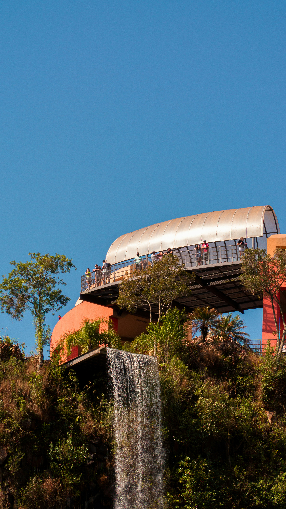
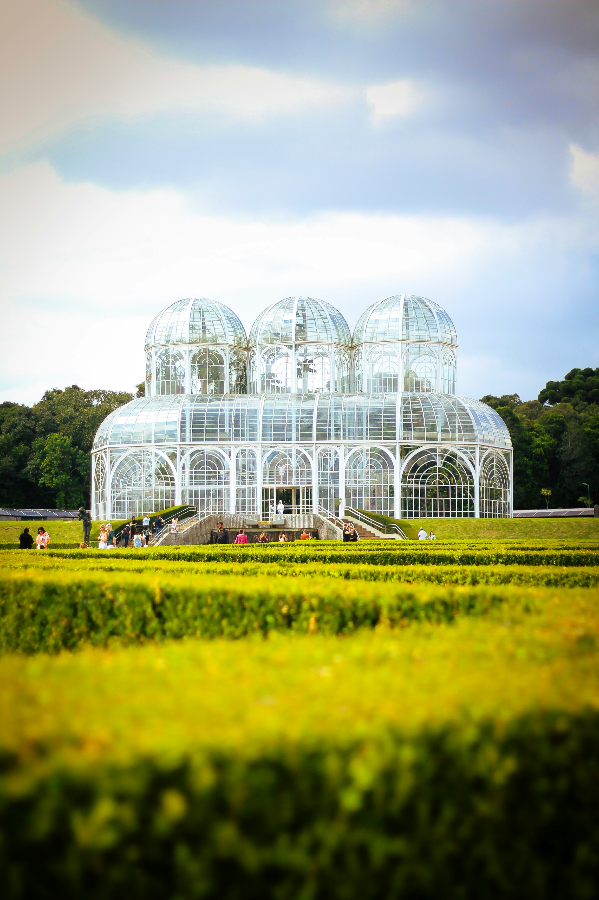

Sobre o tema
A historia dos parques de Curitiba

Contexto historico
nasceram no final do século XIX com o Passeio Público (1886) para drenar brejos, mas ganharam grande impulso nas décadas de 1970 e 1990

Importancia cultural
memória viva dos imigrantes (através de memoriais poloneses, ucranianos e alemães), grandes palcos de arte (como a Ópera de Arame) eponto de encontro social, onde o piquenique e o orgulho pela ecologia definem o estilo de vida do curitibano.

curiosidades
curiosidade 1
Além da beleza das áreas verdes e utilidade dos equipamentos públicos nelas presentes, esses espaços são fundamentais para garantir a ocupação adequada do solo em áreas de preservação. Os lagos, por exemplo, funcionam como importantes reguladores da vazão da água, que fazem grande diferença em períodos de chuva forte.
curiosidade 2
O Parque Lago Azul tem uma área de 128 mil metros quadrados, localizados entre os bairros Ganchinho e Umbará. Foi o 19° parque criado na cidade, tornando-se opção de lazer, principalmente para os moradores da região Sul da cidade.
Interaja com o site
Clique no botao acima